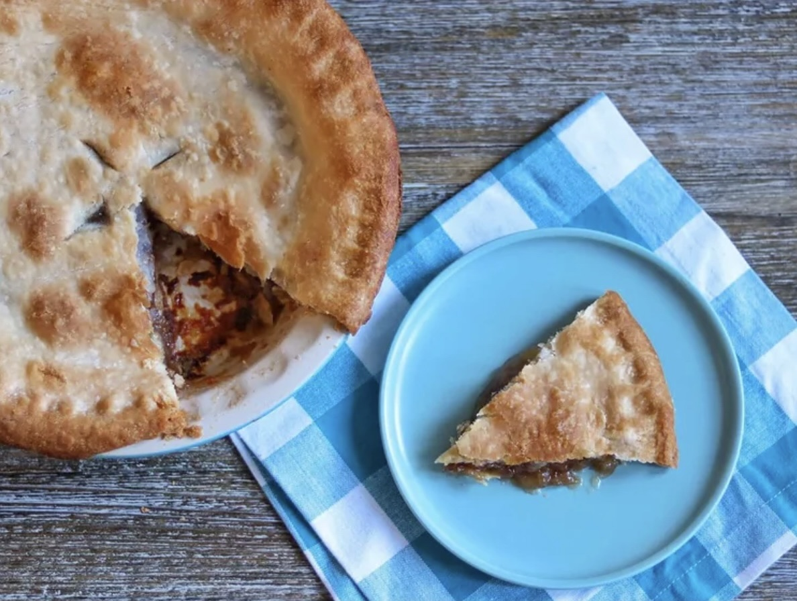

Pie Recipes

Description
This is a recipe for apple pie made without apples. It has all the characteristics of an apple pie with apples. If you didn't know better, you'd think that there really was fruit in it. This is an old chemistry lab experiment to teach the limits of human senses.
Ingredients
- 1 (14.1 ounce) package double-crust pie pastry, thawed
- 2 cups water
- 1 ½ cups white sugar
- 1 ½ teaspoons cream of tartar
- 25 buttery round crackers
- ½ teaspoon ground cinnamon
- 2 tablespoons butter
Steps
- Preheat the oven to 450 degrees F (225 degrees C)
- Roll out pastry, place bottom pastry into a pie pan, and set aside.
- Bring water to a boil in a large saucepan.
- Mix together sugar and cream of tartar in a small bowl. Add mixture to boiling water. Stir, then add crackers, one at a time. Boil for 3 minutes, but do not stir.
- Pour cracker mixture into the pastry-lined pie pan. Sprinkle crackers with cinnamon and dot with butter. Cover with top pastry. Seal edges and cut steam vents in the top.
- Bake in the preheated oven until crust is golden brown, about 30 minutes. You may need to cover the top pastry partway through baking to prevent burning.